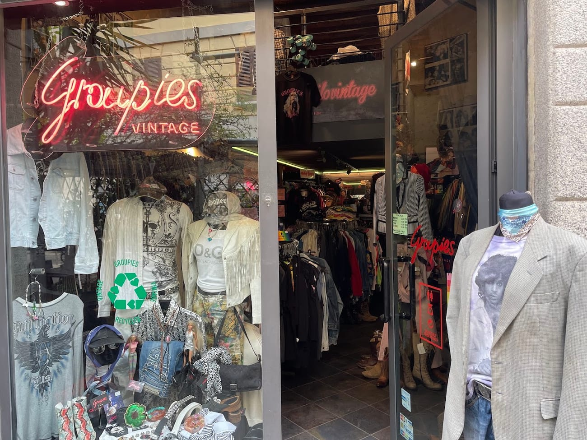

Alice Di Cipriani · dal 2011
Da un banco al mercato, a Groupies
Alice Di Cipriani ha cominciato con un banco al mercato nel 2005 e nel 2011 ha aperto Groupies, in Ticinese. Stilista e cacciatrice di vintage, sceglie ogni capo a mano — rock, denim, streetstyle degli anni '80, '90 e 2000.
«Non solo vintage: pezzi unici, riportati a nuova vita.»
Goth, punk, skater, metal, glam: qui ogni sottocultura trova il suo pezzo. E molti capi li rilavora Alice, con dettagli raccolti nei suoi viaggi — un ricamo thailandese, una toppa messicana su una vecchia giacca.
Alice Di Cipriani · titolare & stylist